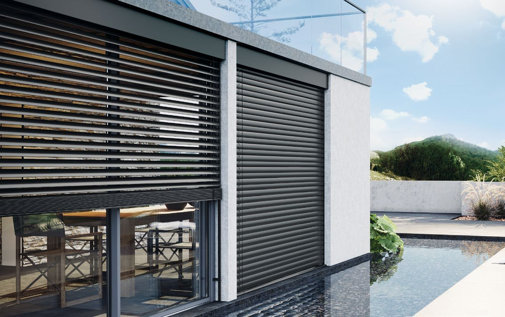
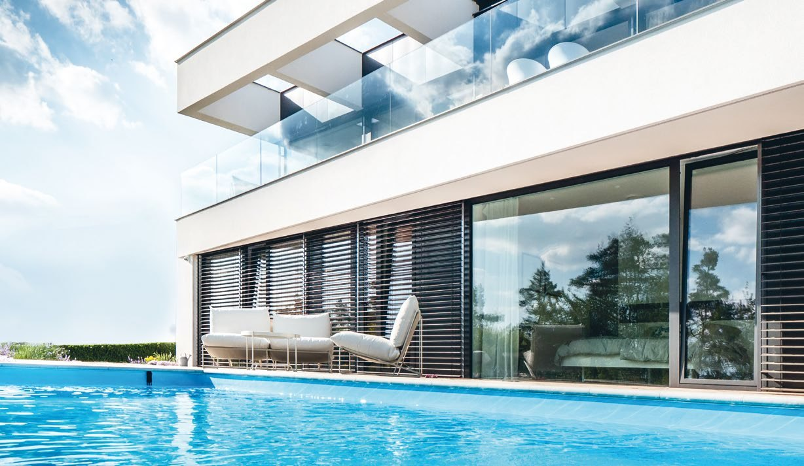
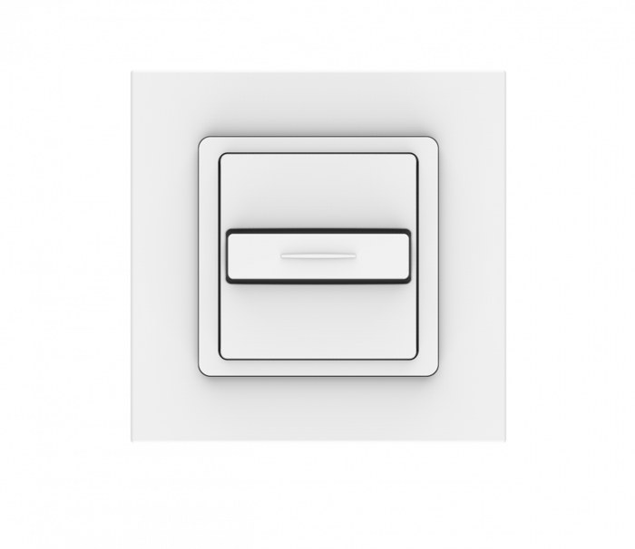
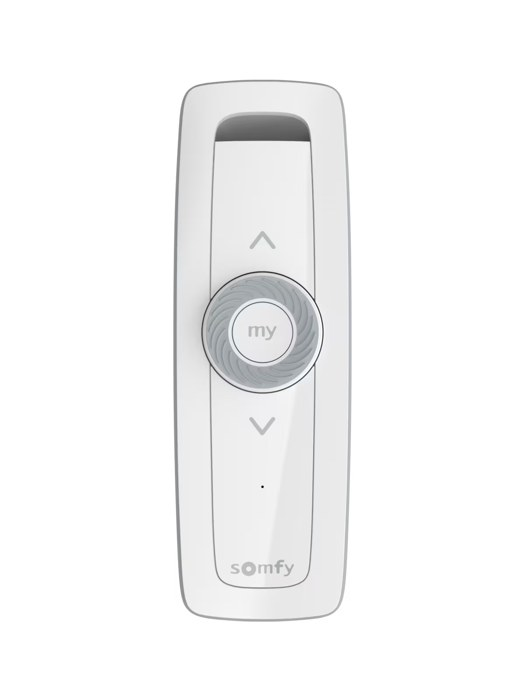

Nowoczesna ochrona przed słońcem. Reguluj ilość światła wpadającego do pomieszczeń.


Lamele żaluzji wykonane są z blachy aluminiowej. Lamele typu C są obustronnie wywinięte, sztywne i odporne na wiatr — obracają się w zakresie 0–180°. Lamele typu Z lepiej zaciemniają, mają uszczelkę wygłuszającą i obracają się w zakresie 0–90°.
Prowadnice z uszczelkami tłumiącymi ograniczają hałas pracy. Żaluzjami można sterować przewodowo za pomocą pięciopozycyjnego włącznika Somfy Smoove Uno lub radiowo – pilotem Somfy Situo Variation io z pokrętłem umożliwiającym płynną regulację kąta nachylenia lameli. Możliwe jest również sterowanie z poziomu smartfona.


Lamele obracają się, regulując ilość światła i widok na zewnątrz, a gdy osłona nie jest potrzebna — podnoszą się i składają w pakiet pod nadprożem.


Płynna regulacja kąta nachylenia lameli
Ograniczają nagrzewanie pomieszczeń latem i pomagają zmniejszyć straty ciepła zimą
Sterowanie z telefonu, automatyczne zwijanie przy wietrze
Lamele C80 są obustronnie wywinięte, sztywne i odporne na wiatr — obracają się w zakresie 0–180°. Lamele Z90 lepiej zaciemniają, mają uszczelkę wygłuszającą i obracają się w zakresie 0–90°.
W nowym budynku lub przy generalnym remoncie najlepiej sprawdzą się żaluzje podtynkowe, ukryte pod ociepleniem. W budynku istniejącym wybiera się zwykle żaluzje adaptacyjne, które nie wymagają ingerencji w docieplenie.
Tak. Żaluzje fasadowe wyposaża się w napęd elektryczny, a z czujnikami pogodowymi mogą same opuszczać się w słońcu i zwijać przy silnym wietrze. Można nimi sterować także z telefonu lub tabletu.
Żaluzje fasadowe pozwalają regulować kąt nachylenia lameli, dzięki czemu można precyzyjnie kontrolować ilość światła wpadającego do pomieszczeń, jednocześnie ograniczając ich nagrzewanie. Rolety zewnętrzne mają pełny pancerz, który po opuszczeniu skuteczniej zaciemnia wnętrze i zapewnia większą osłonę przed hałasem oraz warunkami atmosferycznymi.
Tak, żaluzje fasadowe można zaplanować już na etapie zamawiania okien. W nowym budynku warto uwzględnić je w projekcie, aby odpowiednio przygotować miejsce na montaż i estetycznie zintegrować system z elewacją.
Kolor żaluzji fasadowych warto dopasować do stolarki okiennej i elewacji, aby całość tworzyła spójną kompozycję. Można wybrać odcień zbliżony do koloru okien, który podkreśli ich wygląd, lub postawić na kontrast, który nada budynkowi nowoczesny charakter. Warto również zwrócić uwagę na kolor pozostałych elementów, takich jak brama garażowa czy drzwi wejściowe.
Tak, żaluzje fasadowe można zintegrować z systemem Smart Home, jeśli zastosowane sterowanie jest z nim kompatybilne. Dzięki temu można nimi zarządzać za pomocą aplikacji.
Skontaktuj się z nami — doradzimy technicznie i przygotujemy kalkulację cenową.